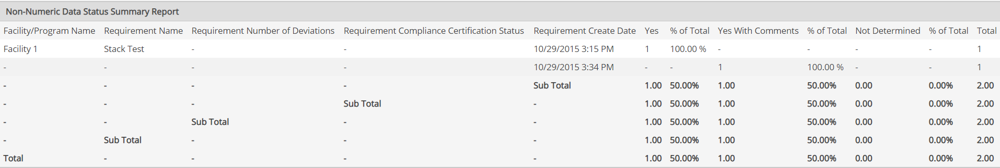

The Non-Numeric Data Status Summary Report is used to produce an overview of the compliance status for non-numeric requirements. It may be used to track and follow up on possible deviations for compliance-related tasks.
An example of a Non-Numeric Data Status Summary Report is:
The report looks at the value of the Comply field for non-numeric requirements and gives the number and percentage of data records for which the values are Yes, Yes with Comments, and Not Determined, respectively.
